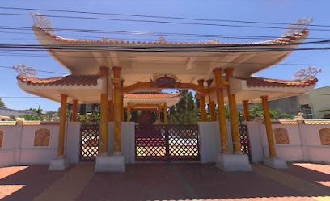

Nhà tưởng niệm đồng chí Tổng Bí thư Lê Duẩn
Nhà tưởng niệm Tổng Bí thư Lê Duẩn tọa lạc tại xã Bình Thạnh, huyện Tuy Phong, tỉnh Bình Thuận, là nơi ghi dấu khoảng thời gian đồng chí được Bác Hồ và Trung ương Đảng cử vào Nam để trực tiếp lãnh đạo cuộc kháng chiến chống Pháp ở Nam Bộ.
Trên đường đi, đồng chí và đoàn công tác đã lưu lại tại xã Bình Thạnh, huyện Tuy Phong trong một thời gian ngắn. Trong những ngày lưu lại tại Bình Thạnh, đồng chí đã trực tiếp bồi dưỡng trình độ lý luận chính trị cho cán bộ địa phương và giúp giải quyết nhiều vấn đề vướng mắc trong chỉ đạo kháng chiến của huyện Tuy Phong và tỉnh Bình Thuận lúc bấy giờ.
Để thể hiện tình cảm và sự biết ơn, trân trọng của Đảng bộ và Nhân dân huyện Tuy Phong đối với đồng chí Lê Duẩn, năm 2009 Ủy ban nhân dân huyện Tuy Phong đã đầu tư kinh phí xây dựng Nhà tưởng niệm Tổng Bí thư Lê Duẩn tại xã Bình Thạnh. Đây là việc làm mang nhiều ý nghĩa sâu sắc, không những góp phần giáo dục truyền thống đấu tranh cách mạng, tình yêu quê hương đất nước, tinh thần chịu đựng gian khổ, hy sinh của các bậc tiền nhân... cho thế hệ trẻ hôm nay và mai sau; mà còn thể hiện tấm lòng tri ân đối với người lãnh đạo đáng kính đã có nhiều cống hiến to lớn cho sự nghiệp đấu tranh giải phóng dân tộc, thống nhất đất nước; đồng thời là lời nhắn nhủ cho thế hệ hôm nay và mai sau về lòng yêu nước, tinh thần dân tộc, ý chí đấu tranh kiên cường, bất khuất của người dân Bình Thạnh nói riêng và người dân huyện Tuy Phong nói chung.

ĐVới những giá trị và ý nghĩa đó, ngày 04/7/2023 Nhà tưởng niệm Tổng Bí thư Lê Duẩn, xã Bình Thạnh, huyện Tuy Phong đã được Ủy ban nhân dân tỉnh xếp hạng di tích lịch sử - văn hóa cấp tỉnh tại Quyết định số 1308/QĐ-UBND. Đây là cơ sở pháp lý quan trọng để giữ gìn, tôn vinh những cống hiến to lớn của đồng chí Tổng Bí thư Lê Duẩn trong sự nghiệp đấu tranh giải phóng dân tộc, thống nhất đất nước và giáo dục truyền thống cách mạng cho thế hệ mai sau. Qua đó, nhắc nhở thế hệ trẻ biết được những gian truân, sự hy sinh và mất mát của biết bao thế hệ cha anh đi trước mới có được hòa bình, độc lập và cuộc sống ấm no, hạnh phúc như ngày hôm nay.
Phòng Nghiệp vụ Bảo tồn - Bảo tàng tỉnh Bình Thuận